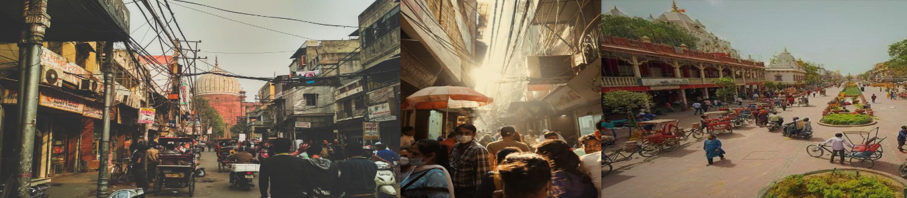

Experience the historic and culture-rich streets of the Chandni Chowk , the essence of Old Delhi!
While there is plenty to read about it in books, hear it in songs and, watch in movies, no experience parallels a walk down the vibrant streets and hustle bustle of Chandi Chowk. Said to be one of Asia's oldest markets, it was established back in the 1650's by the Mughal Emperor Shahjahan. Chandni Chowk's charm lies in its extraordinary, culture-rich streets which have seen everything from the rule of the Mughals to the making of kebab shops that one can't miss. The streets, the architecture and all its people that claim them each day, tie in the glory of its history and its ever changing present by giving us a beautiful glimpse into the art that is modernity and the everyday. It obviously is also surrounded by architectural wonders like the Red Fort, Jama Masjid, Shankar Temple, etc, that bring religious and historical harmony together that deserve a standalone visit of their own.

Source: delhitourism.gov.in
What does Chandni Chowk have to offer?
From chikankari sarees for our best occasions, glass lamps that light up our homes, streets that carry the delicious scent of the various different sweets and delicacies, nooks that hold the original haldirams location to our very own parathe waali gali, Chandni Chowk is known for its diversity as well as authenticity. Each nook and cranny holds small vendors selling earrings, electronics, food and big brands like Giani's. It is home to our parents who frequent these streets in the name of nostalgia, students looking for different kinds of books in Daryaganj or stationary in Nai Sarak, mothers looking for the perfect jewellery in Dariba Kalan, families preparing for a wedding with the cards and decorations in Chawri Bazar, people getting all the spices for home in one go at Khari Baoli and more. There's all the food you can imagine which has been practiced and mastered for years which adds to the bursting flavours. Fruit chaat, rabri falooda, mutton seekh kebab, dahi bhalle, jalebi, aloo ke parathe, khurchan and you name it, you will find it. A perfect blend of nostalgia while getting all that you need.
There is always more, to both offer and find in these busy streets. Not one moment do these streets leave you alone or make you feel lost. There are 10 different things happening in the same time and we are here to help you make sense of it all. While the big shops that adorn the streets in front are worth the time, we want to take you on a journey into smaller streets and shops that will make this experience as unforgettable as Chandni Chowk is. Food and its flavours, books and its bearers, shoes and its sellers, we are determined to show you the original and authentic chandni chowk.